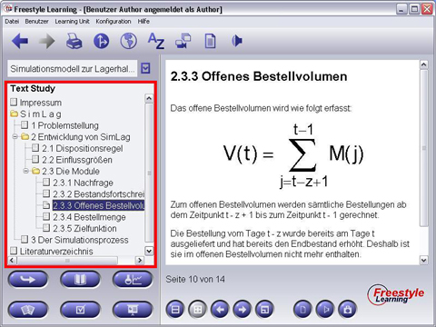

Nachdem Sie eine Learning Unit View aktiviert haben, werden Ihnen in der linken Seite des Bildes alle in dieser View beinhalteten Elemente in einer baumartigen Struktur, dem so genannten Structure Tree, aufgelistet. Sobald Sie mit mit einem einfachen Mausklick ein Learning Unit View-Element des Structure Trees aktivieren, wird der korrespondierende Inhalt auf der rechten Seite angezeigt, innerhalb des Anzeigebereichs (Content Panels).

Zurück zur Hauptseite